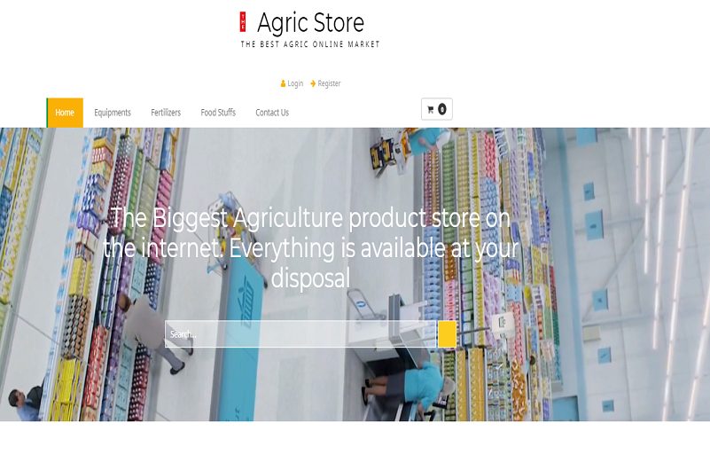

Projects

Nubia Emr
create mode 100644 fontawesome-free/webfonts/fa-solid-900.woff2
create mode 100644 images/bista-logo.png
Technologies : Php(Laravel), Javascript(Angular), Mysql
Scribe Productions
create mode 100644 fontawesome-free/webfonts/fa-solid-900.woff2
create mode 100644 images/bista-logo.png
Technologies : Php(Laravel), Javascript(Angular), Mysql
Career Predictor
create mode 100644 fontawesome-free/webfonts/fa-solid-900.woff2
create mode 100644 images/bista-logo.png
Technologies : Php(Laravel), Javascript(Vue), PostgreSql

Agric Store
create mode 100644 fontawesome-free/webfonts/fa-solid-900.woff2
create mode 100644 images/bista-logo.png
Technologies : Php(Laravel), Javascript(Vue), Mysql